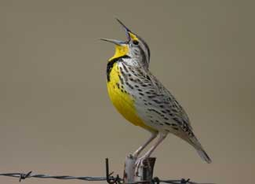

The Conservation Reserve Program (CRP) allows farmers, ranchers or anyone who owns environmentally sensitive land to avoid contributing to water pollution and soil erosion, both of which are common and serious problems on sloped land, areas near a water source, or land that is otherwise particularly susceptible to erosion. And that’s not CRP’s only benefit - land enrolled in the program also doubles as valuable wildlife habitat. But what’s CRP’s fastest selling point? Landowners actually get paid to enroll their land.
The program is run by the Farm Service Agency (FSA) of the U.S. Department of Agriculture (USDA), with assistance from the Natural Resources Conservation Service. Here’s how it works: Landowners enroll eligible land in 10- to 15-year contracts, plant and maintain an approved cover crop (trees, native grasses or other crops), and receive an annual payment for their efforts from the USDA’s Commodity Credit Corporation. Basically, the USDA is renting land from individuals. In some cases, landowners may receive an additional payment to assist with the costs associated with establishing the cover crop.
It’s that simple. The program is the United States’ largest private lands conservation program - as of January, more than 34 million acres were enrolled, and the USDA recently announced that $1.8 billion in rental payments were paid to landowners for participation in 2007 (an average of $49.49 per acre). Click here to see a state-by-state report outlining the number of acres enrolled, the rental payment amounts and more.
Areas that are prone to erosion (most commonly cultivated farmland or grassland that is grazed by livestock) need structure in the form of a strong root base to hold the soil intact and prevent it, along with the nutrients or chemicals it contains, from blowing away or washing into a nearby waterway. This root matrix is provided by the cover crop, which can be planted in contoured fields, along waterways, in designated drainage channels or floodplains, and more. According to the Iowa Department of Natural Resources, strips of trees, shrubs, forbs and/or grasses planted along streambanks or as field windbreaks (also know as “riparian buffers”) reduce erosion by as much as 80 percent on cropped or heavily grazed land.
Aboveground, the buffer acts as a filter by catching sediment and slowing runoff from rainfall or snowmelt, allowing it to soak into the ground and recharge groundwater resources while discouraging flash flooding. In a 2002 national water quality inventory report, the U.S. Environmental Protection Agency (EPA) named “nonpoint source pollution” from agriculture-related activities as the leading pollutant in surveyed rivers and streams, and the second largest source of pollution in lakes, ponds and reservoirs. (Nonpoint source pollution is contamination that originates from a nonspecific source such as a collection of fields or an urban area, unlike waste from a factory or sewage treatment plant.)
According to the EPA, excessive agricultural runoff can come from overgrazing; plowing too often or at the wrong time; poorly located or mismanaged animal feeding operations; and improper, excessive or poorly timed applications of pesticides, irrigation water and fertilizer. To learn more about the adverse effects of soil erosion, fertilizers, pesticides and other ag-related pollutants on water resources, click here.
The program also allows the land to support a larger and more diverse population of birds. A study on the benefits of CRP to grassland bird populations in North and South Dakota (conducted by researchers from the U.S. Fish and Wildlife Service, U.S. Geological Survey and the University of Montana) predicted that, without the existence of CRP land, there would be 1.8 million fewer sedge wrens, grasshopper sparrows, dickcissels, bobolinks and western meadowlarks. The findings are significant because grassland bird species are declining faster than any other bird group in North America. In addition to the boost in grassland birds, a related study found that CRP in the area also encouraged an increase in duck populations - 26 million ducks hatched in the area between 1992 and 2004.
Contact your local FSA office (click here to locate yours) to learn about the CRP programs for which you may be eligible. Some programs designed for especially sensitive areas offer higher rental payments than others, and for some applicants, additional monetary incentives may apply. The CRP Continuous Signup is the easiest to qualify for and eligible land is automatically accepted into the program.
|
 ISTOCKPHOTO/ERIC SCHMIDT The food and shelter provided by cover crops on CRP land are beneficial to many grassland bird species, including this Western Meadlowlark. |
|
|